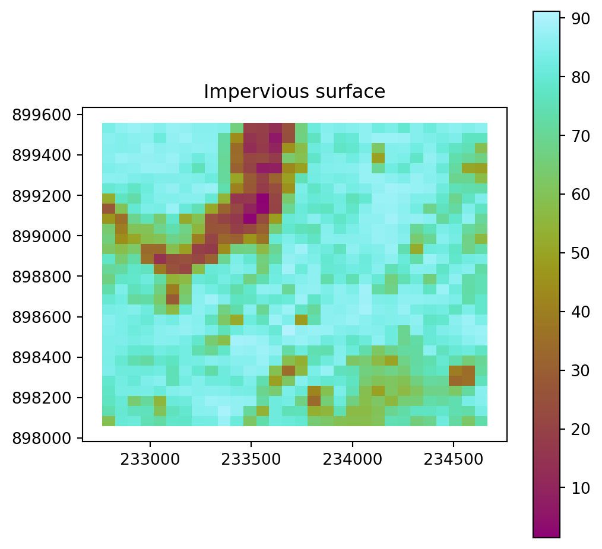
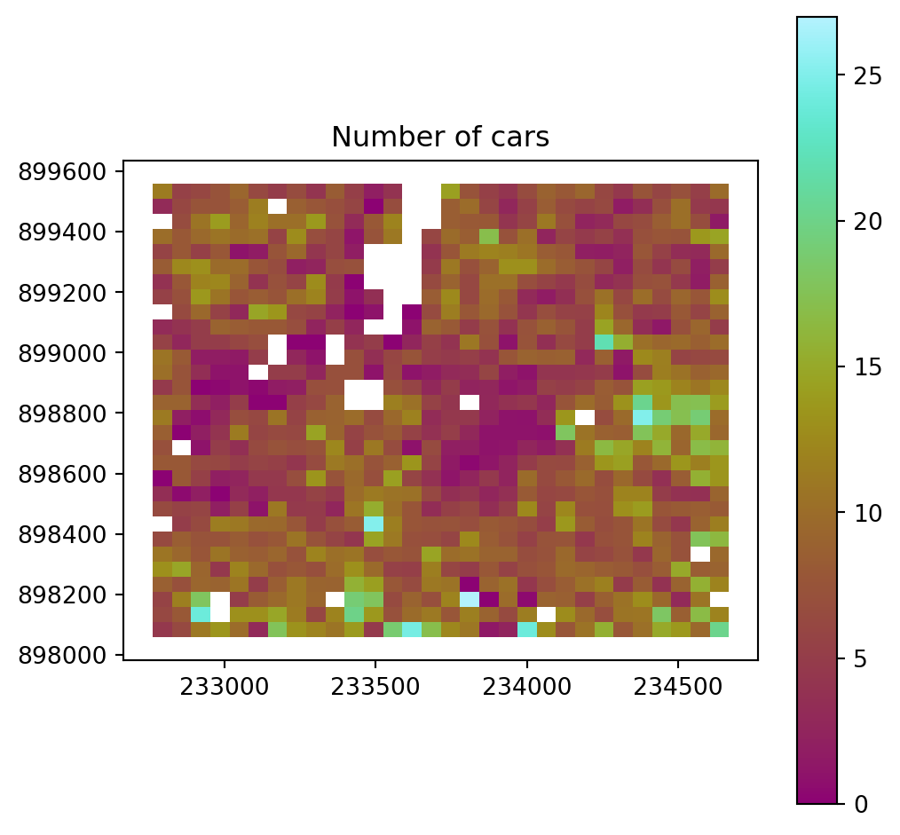
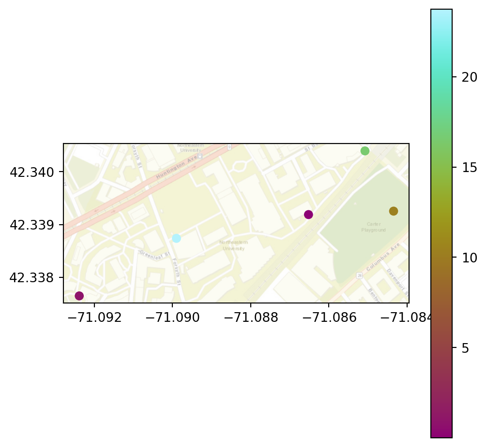
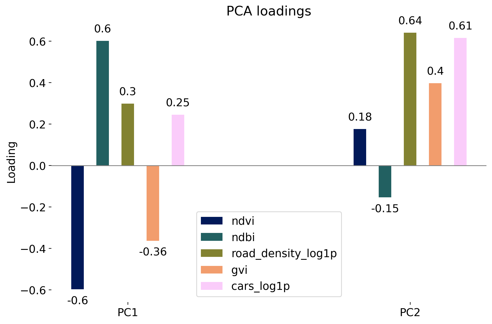
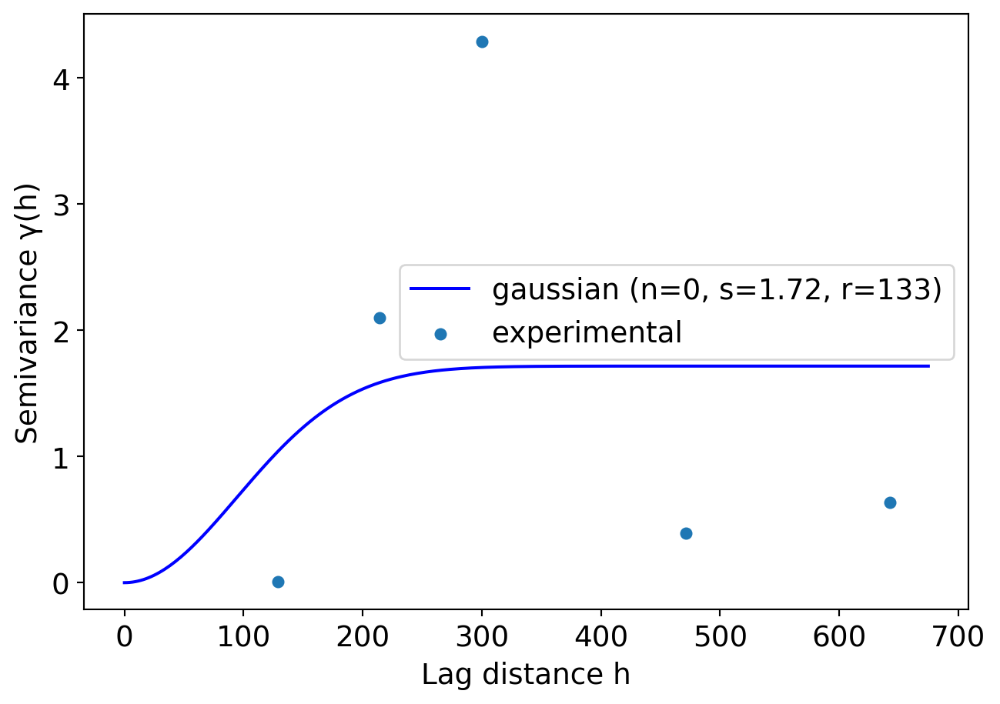
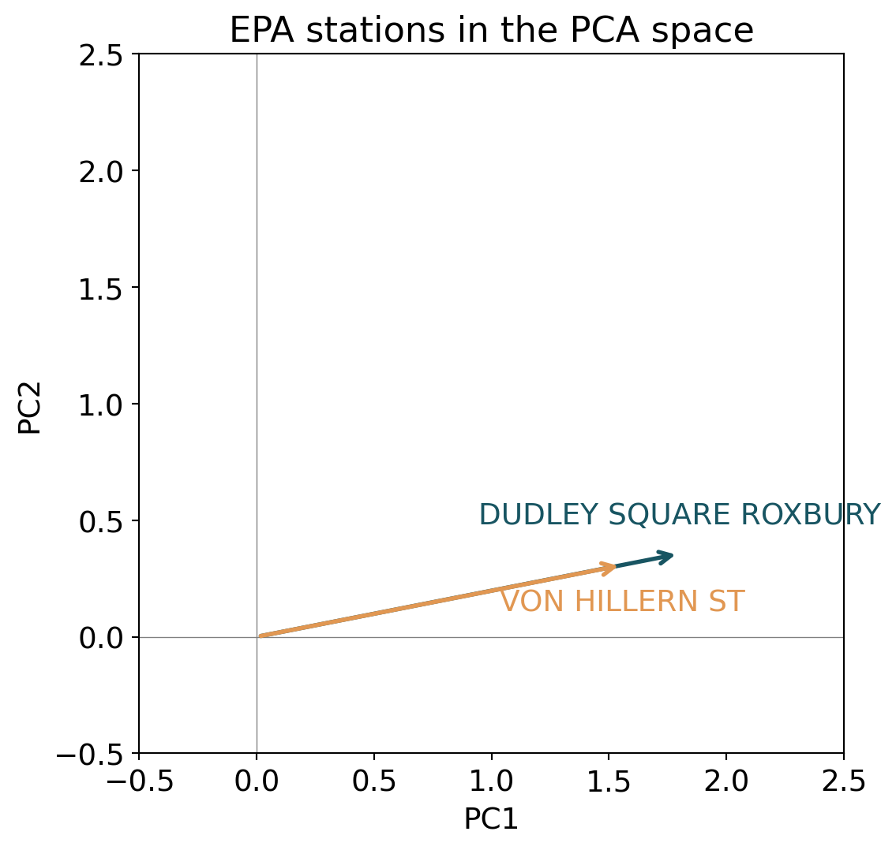
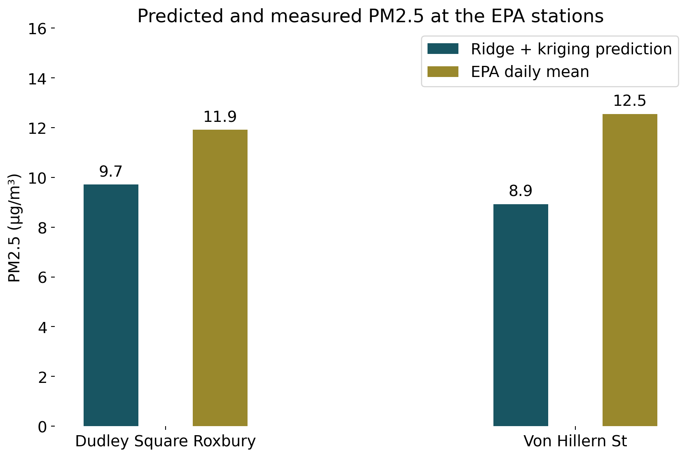

#Import libraries
from pathlib import Path
import sys
import numpy as np
import pandas as pd
import geopandas as gpd
import matplotlib.pyplot as plt
from sklearn.preprocessing import StandardScaler
from sklearn.decomposition import PCA
from scipy import stats
from src.time_series.series_aligner import align_sensor_series
from src.kriging.ridge_regression import train_ridge, ridge_predict
from src.kriging.variogram_training import fit_variogram_model, plot_variogram_fit, ordinary_kriging_predict
import cmcrameri.cm as cmc
import contextily as ctx
from src.visualization.distribution_plotter import DistributionPlotterModel Inference at EPA stations (PM2.5)
In this notebook I’ll examine the residuals for the PM2.5 model trained with the sensor data at the EPA sensor locations. The PM2.5 model works in log space:
\[\begin{equation} \log(1 + PM_{2.5}) = A\mathbf{x} + b + \epsilon \end{equation}\]
we want to obtain:
\[\begin{equation} \epsilon(\mathbf{x_{i}}) \quad i\in\{1,2\} \end{equation}\]
where \(i\) runs over the two EPA sensor locations.
Open the satellite-derived layers.
These have been precomputed, and were obtained using Google Earth Engine.
Our satellite layers include:
- NDVI: Normalized Difference Vegetation Index.
- NDBI: Normalized Difference Built-Up Index.
- Impervious Surface (from LandSat).
- Road density (from TIGER).
PROJECT_ROOT = Path("/Users/legariapena.j/Documents/open-sensing-analysis/open-sensing-analysis")
DATA_DIR = PROJECT_ROOT/"data"
LAYER_DIR = DATA_DIR/"kriging_satellite"/"layers"
satellite_layer_paths = {
"ndvi": LAYER_DIR/"ndvi_grid.geojson",
"ndbi": LAYER_DIR/"ndbi_grid.geojson",
"impervious": LAYER_DIR/"nlcd_impervious_grid.geojson",
"road_density": LAYER_DIR/"road_density_grid.geojson"
}
names = list(satellite_layer_paths.keys())
satellite_gdfs = {name: gpd.read_file(satellite_layer_paths[name]) for name in names}
fig, ax = plt.subplots(figsize = (6,6))
satellite_gdfs["impervious"].plot(column = "impervious", cmap = cmc.hawaii, legend = True, ax = ax)
ax.set_title("Impervious surface")
Open the SVI derived layers
Now let’s open the SVI derived layers which include:
- GVI: Green View Index.
- Facade area.
- Number of cars.
- Sky ratio.
- Road ratio.
SVI_DIR = DATA_DIR/"kriging_street_view"
svi_layer_paths = {
"gvi": SVI_DIR/"grid_aggregated_gvi.geojson",
"facade_area": SVI_DIR/"grid_aggregated_facade_area.geojson",
"n_cars": SVI_DIR/"grid_aggregated_n_cars.geojson",
"sky_ratio": SVI_DIR/"grid_aggregated_sky_ratio.geojson",
"road_ratio": SVI_DIR/"grid_aggregated_road_ratio.geojson"
}
svi_names = list(svi_layer_paths.keys())
svi_gdfs = {name: gpd.read_file(svi_layer_paths[name]) for name in svi_names}
fig, ax = plt.subplots(figsize = (6,6))
svi_gdfs["n_cars"].plot(column = "n_cars_mean", cmap = cmc.hawaii, legend = True, ax = ax)
ax.set_title("Number of cars")
Load the sensor PM2.5 data
We will load and align the sensor PM2.5 data. The values that we will use are the average between 15:00 and 16:00 of the stored timestamps, which are in UTC (11:00 to 12:00 in Boston during the summer).
SENSORS_DIR = DATA_DIR/"sensors"
sensor_csvs_dirs = {
"Boston Carter Field": SENSORS_DIR/"boston_carter_field"/"boston_carter_field.csv",
"Boston Gainsborough Parking Garage": SENSORS_DIR/"boston_gainsborough_parking"/"boston_gainsborough_parking.csv",
"Boston Robinson Hall": SENSORS_DIR/"boston_robinson_hall"/"boston_robinson_hall.csv",
"Boston West Village B": SENSORS_DIR/"boston_west_village_b"/"boston_west_village_b.csv",
"Boston World Series Way": SENSORS_DIR/"boston_world_series_way"/"boston_world_series_way.csv"
}
names = list(sensor_csvs_dirs.keys())
sensor_dfs = {
name:pd.read_csv(sensor_csvs_dirs[name]) for name in names
}
aligned_pm25, _ = align_sensor_series(
sensor_dataframes = sensor_dfs,
variable_name = "pm25",
time_column = "timestamp",
sampling_interval = "1min",
timestamp_tolerance = "15min"
)
sensor_pm25 = aligned_pm25.between_time("15:00", "16:00").mean(axis = 0)
sensor_pm25Boston Carter Field 10.322884
Boston Gainsborough Parking Garage 16.439812
Boston Robinson Hall 0.003135
Boston West Village B 0.884483
Boston World Series Way 23.751881
dtype: float64Open the sensor locations
SENSOR_LOCATIONS_PATH = DATA_DIR/"spatial"/"sensor_locations.json"
all_sensor_locations = pd.read_json(SENSOR_LOCATIONS_PATH)
sensor_locations = all_sensor_locations[all_sensor_locations["sensor_name"].isin(names)].copy()
sensor_locations["pm25"] = sensor_locations["sensor_name"].map(sensor_pm25)
gdf_sensors = gpd.GeoDataFrame(
sensor_locations,
geometry = gpd.points_from_xy(sensor_locations["longitude"], sensor_locations["latitude"]),
crs = "EPSG:4326"
)
fig, ax = plt.subplots(figsize = (6,6))
gdf_sensors.plot(column = "pm25", cmap = cmc.hawaii, legend = True, ax = ax)
ctx.add_basemap(ax, crs = gdf_sensors.crs, source = ctx.providers.Esri.WorldStreetMap, alpha = 0.5, attribution = False)
Build one table with all the features
Each layer is a separate file over the same 900 grid cells. We join them on the cell id, so each row is one cell and each column is one feature.
satellite_columns = {
"ndvi": "ndvi",
"ndbi": "ndbi",
"impervious": "impervious",
"road_density": "road_density_km_km2"
}
svi_columns = {
"gvi": "gvi_mean",
"facade_area": "facade_area_mean",
"n_cars": "n_cars_mean",
"sky_ratio": "sky_ratio_mean",
"road_ratio": "road_ratio_mean"
}
grid_features = satellite_gdfs["ndvi"][["id", "geometry"]].rename(columns = {"id": "grid_id"})
for name in satellite_columns:
column = satellite_columns[name]
layer = satellite_gdfs[name][["id", column]].rename(columns = {"id": "grid_id", column: name})
grid_features = grid_features.merge(layer, on = "grid_id", how = "left")
for name in svi_columns:
column = svi_columns[name]
layer = svi_gdfs[name][["grid_id", column]].rename(columns = {column: name})
grid_features = grid_features.merge(layer, on = "grid_id", how = "left")
grid_features| grid_id | geometry | ndvi | ndbi | impervious | road_density | gvi | facade_area | n_cars | sky_ratio | road_ratio | |
|---|---|---|---|---|---|---|---|---|---|---|---|
| 0 | 0 | POLYGON ((232762.527 898058.685, 232826.045 89... | 0.325637 | -0.207903 | 59.043725 | NaN | 0.032717 | 0.209452 | 4.500000 | 0.590890 | 0.188072 |
| 1 | 1 | POLYGON ((232762.527 898108.712, 232826.045 89... | 0.217034 | -0.159759 | 74.126761 | 24.844960 | 0.202174 | 0.281874 | 6.200000 | 0.301206 | 0.287686 |
| 2 | 2 | POLYGON ((232762.527 898158.739, 232826.045 89... | 0.160051 | -0.127417 | 76.528328 | 37.069438 | 0.115875 | 0.413193 | 5.666667 | 0.396041 | 0.233343 |
| 3 | 3 | POLYGON ((232762.527 898208.766, 232826.045 89... | 0.156749 | -0.112085 | 77.903810 | 14.902990 | 0.280758 | 0.187692 | 8.666667 | 0.072379 | 0.336889 |
| 4 | 4 | POLYGON ((232762.527 898258.793, 232826.045 89... | 0.128992 | -0.074170 | 79.078385 | 17.275134 | 0.306968 | 0.071550 | 13.000000 | 0.207012 | 0.220121 |
| ... | ... | ... | ... | ... | ... | ... | ... | ... | ... | ... | ... |
| 895 | 895 | POLYGON ((234604.554 899309.36, 234668.072 899... | 0.350302 | -0.209824 | 48.890099 | 15.274230 | 0.154264 | 0.238123 | 9.666667 | 0.229887 | 0.227876 |
| 896 | 896 | POLYGON ((234604.554 899359.387, 234668.072 89... | 0.321538 | -0.209683 | 67.225389 | 60.922615 | 0.154249 | 0.266334 | 14.600000 | 0.195918 | 0.280603 |
| 897 | 897 | POLYGON ((234604.554 899409.414, 234668.072 89... | 0.266044 | -0.172574 | 58.741227 | 111.925509 | 0.206352 | 0.251087 | 1.500000 | 0.388379 | 0.126844 |
| 898 | 898 | POLYGON ((234604.554 899459.441, 234668.072 89... | 0.159109 | -0.090371 | 77.101772 | 42.355058 | 0.169943 | 0.298126 | 4.333333 | 0.387167 | 0.119853 |
| 899 | 899 | POLYGON ((234604.554 899509.468, 234668.072 89... | 0.069190 | -0.020972 | 86.247295 | 31.555821 | 0.083303 | 0.293767 | 9.833333 | 0.312474 | 0.220253 |
900 rows × 11 columns
Data preparation
The PM2.5 model treats a cell with no road density as a cell with no roads, so those cells get 0 instead of the median.
grid_features["road_density"] = grid_features["road_density"].fillna(0)
grid_features["road_density_log1p"] = np.log1p(grid_features["road_density"].clip(lower = 0))
grid_features["cars_log1p"] = np.log1p(grid_features["n_cars"].clip(lower = 0))
COLS_PCA = ["ndvi", "ndbi", "road_density_log1p", "gvi", "cars_log1p"]
grid_features[COLS_PCA] = grid_features[COLS_PCA].fillna(grid_features[COLS_PCA].median())Apply PCA to the features
scaler = StandardScaler()
pca = PCA(n_components = 2)
X_scaled = scaler.fit_transform(grid_features[COLS_PCA])
X_pca = pca.fit_transform(X_scaled)
grid_features["PC1"] = X_pca[:,0]
grid_features["PC2"] = X_pca[:,1]
loadings = []
for i in range(len(COLS_PCA)):
loadings.append({
"x": ["PC1", "PC2"],
"y": pca.components_[:, i],
"color_bars": cmc.batlow(i/(len(COLS_PCA) - 1)),
"label": COLS_PCA[i]
})
plotter = DistributionPlotter()
ax = plotter.multi_distribution_plotter(
loadings,
width = 9,
height = 6,
title = "PCA loadings",
variable_name = "Loading",
values_on_top = True,
delta = 0.03,
decimals = 2
)
ax.axhline(0, color = "gray", linewidth = 1)
Train the ridge model + variogram
The ridge model is trained on \(\log(1 + PM_{2.5})\), with a stronger regularization than the temperature model.
sensors_in_grid = gpd.sjoin(
gdf_sensors.to_crs(grid_features.crs),
grid_features,
how = "left",
predicate = "within"
)
sensors_in_grid["log_pm25"] = np.log1p(sensors_in_grid["pm25"].clip(lower = 0))
ridge_model = train_ridge(
X = sensors_in_grid[["PC1", "PC2"]].to_numpy(dtype = float),
y = sensors_in_grid["log_pm25"],
alpha = 10,
fit_intercept = True
)
print(f"R2: {ridge_model['score_r2']:.3f}")
print(f"Coefficients (PC1, PC2): {ridge_model['coefficients']}")
print(f"Intercept: {ridge_model['intercept']:.3f}")
n_samples = ridge_model["n_samples"]
n_features = ridge_model["n_features"]
r2 = ridge_model["score_r2"]
f_statistic = (r2/n_features)/((1 - r2)/(n_samples - n_features - 1))
p_value = stats.f.sf(f_statistic, n_features, n_samples - n_features - 1)
print(f"F({n_features}, {n_samples - n_features - 1}) = {f_statistic:.3f}, p = {p_value:.3f}")R2: 0.355
Coefficients (PC1, PC2): [0.3235275288419331, -0.05000806631477504]
Intercept: 1.806
F(2, 2) = 0.550, p = 0.645Now let’s obtain the variogram of the residuals in log space.
sensors_in_grid["ridge_prediction_log"] = ridge_predict(
ridge_model,
sensors_in_grid[["PC1", "PC2"]].to_numpy(dtype = float)
)
sensors_in_grid["residual"] = sensors_in_grid["log_pm25"] - sensors_in_grid["ridge_prediction_log"]
residual_points = list(zip(sensors_in_grid.geometry.x, sensors_in_grid.geometry.y))
residual_values = sensors_in_grid["residual"].tolist()
variogram_model = fit_variogram_model(points = residual_points, values = residual_values)
plot_variogram_fit(variogram_model)
Getting the residuals at the two EPA sensor locations.
The prediction is computed in log space, clipped to \([0, \log(1 + 50)]\) as in the reference notebook, and then converted back to µg/m³.
EPA_VECTORS_PATH = DATA_DIR/"2026_09_17_create_epa_vectors_for_inference"/"epa_inference_vectors.csv"
EPA_PM25_PATH = DATA_DIR/"2026_08_26_sensor_comparisons"/"data"/"boston_pm25_combined.csv"
MAX_LOG_PM25 = np.log1p(50)
epa_stations = pd.read_csv(EPA_VECTORS_PATH)
epa_stations["road_density_log1p"] = np.log1p(epa_stations["road_density_km_km2"].fillna(0).clip(lower = 0))
epa_stations["cars_log1p"] = np.log1p(epa_stations["n_cars"].clip(lower = 0))
X_epa_pca = pca.transform(scaler.transform(epa_stations[COLS_PCA]))
epa_stations["PC1"] = X_epa_pca[:,0]
epa_stations["PC2"] = X_epa_pca[:,1]
fig, ax = plt.subplots(figsize = (6,6))
station_colors = [cmc.batlow(0.2), cmc.batlow(0.7)]
label_offsets = [0.1, -0.1]
label_alignments = ["bottom", "top"]
for i in range(len(epa_stations)):
pc1 = epa_stations["PC1"].iloc[i]
pc2 = epa_stations["PC2"].iloc[i]
ax.annotate(
"",
xy = (pc1, pc2),
xytext = (0, 0),
arrowprops = dict(arrowstyle = "->", color = station_colors[i], linewidth = 2)
)
ax.text(pc1, pc2 + label_offsets[i], epa_stations["site_name"].iloc[i], color = station_colors[i], ha = "center", va = label_alignments[i])
ax.axhline(0, color = "gray", linewidth = 0.5)
ax.axvline(0, color = "gray", linewidth = 0.5)
ax.set_xlim(-0.5, 2.5)
ax.set_ylim(-0.5, 2.5)
ax.set_xlabel("PC1")
ax.set_ylabel("PC2")
ax.set_title("EPA stations in the PCA space")
epa_stations["ridge_prediction_log"] = ridge_predict(
ridge_model,
epa_stations[["PC1", "PC2"]].to_numpy(dtype = float)
)
epa_stations_projected = gpd.GeoDataFrame(
epa_stations,
geometry = gpd.points_from_xy(epa_stations["longitude"], epa_stations["latitude"]),
crs = "EPSG:4326"
).to_crs(grid_features.crs)
epa_points = list(zip(epa_stations_projected.geometry.x, epa_stations_projected.geometry.y))
epa_stations["kriged_residual_log"] = ordinary_kriging_predict(
points = residual_points,
values = residual_values,
fit = variogram_model,
query_points = epa_points
)
epa_stations["prediction_log"] = (epa_stations["ridge_prediction_log"] + epa_stations["kriged_residual_log"]).clip(0, MAX_LOG_PM25)
epa_stations["prediction"] = np.expm1(epa_stations["prediction_log"]).clip(lower = 0)
training_days = aligned_pm25.between_time("15:00", "16:00").index.normalize().unique().strftime("%Y-%m-%d")
epa_pm25 = pd.read_csv(EPA_PM25_PATH)
epa_pm25 = epa_pm25[epa_pm25["date"].isin(training_days)].copy()
measured = epa_pm25.groupby("site_name")["pm25"].mean()
n_days = epa_pm25.groupby("site_name")["date"].nunique()
epa_stations["n_days"] = epa_stations["site_name"].map(n_days)
epa_stations["measured_daily_mean"] = epa_stations["site_name"].map(measured)
epa_stations["residual_daily_mean"] = epa_stations["measured_daily_mean"] - epa_stations["prediction"]
epa_stations["residual_daily_mean_log"] = np.log1p(epa_stations["measured_daily_mean"]) - epa_stations["prediction_log"]
epa_stations[["site_name", "n_days", "PC1", "PC2", "ridge_prediction_log", "kriged_residual_log", "prediction",
"measured_daily_mean", "residual_daily_mean", "residual_daily_mean_log"]].round(2)| site_name | n_days | PC1 | PC2 | ridge_prediction_log | kriged_residual_log | prediction | measured_daily_mean | residual_daily_mean | residual_daily_mean_log | |
|---|---|---|---|---|---|---|---|---|---|---|
| 0 | DUDLEY SQUARE ROXBURY | 12 | 1.80 | 0.36 | 2.37 | 0.0 | 9.71 | 11.91 | 2.20 | 0.19 |
| 1 | VON HILLERN ST | 12 | 1.56 | 0.31 | 2.29 | 0.0 | 8.92 | 12.55 | 3.63 | 0.31 |
station_names = epa_stations["site_name"].str.title().tolist()
pm25_bars = [
{"x": station_names, "y": epa_stations["prediction"].to_numpy(), "color_bars": cmc.batlow(0.2), "label": "Ridge + kriging prediction"},
{"x": station_names, "y": epa_stations["measured_daily_mean"].to_numpy(), "color_bars": cmc.batlow(0.55), "label": "EPA daily mean"}
]
ax = plotter.multi_distribution_plotter(
pm25_bars,
width = 9,
height = 6,
title = "Predicted and measured PM2.5 at the EPA stations",
variable_name = "PM2.5 (µg/m³)",
values_on_top = True,
delta = 0.2,
decimals = 1,
ylims = [0, 16]
)